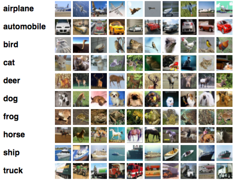

CIFAR10#
Objective#
Training models to associate images representing common objects with their class (multiclass classification).
Context#
The CIFAR10 dataset consists of 60,000 32x32 color images in 10 classes, with 6,000 images per class. The classes are completely mutually exclusive. There are 50,000 training images and 10,000 test images.

Instructions and advice#
Follow the main steps of a supervised ML project: data loading and exploring, data preparation, model training and evaluation.
Use the PyTorch library for data loading and model training. If you are new to it, consider following its official tutorial.
Don’t forget to setup your environment by importing the necessary Python packages. In particular, the ainotes project contains several useful functions for plotting and training.
Regarding data loading and preparation, bitmap images should be normalized. You can find an example using the CIFAR10 dataset here.
You may train and evaluate a standard MultiLayer Perceptron, using this chapter as a blueprint. Warning: you will have to adapt the inputs of your network to the color images of the CIFAR10 dataset.
Bonus: train a convolutional neural network using this chapter as a blueprint. After training, compare its performance with the MLP results.
# pylint: disable=wrong-import-position
import os
# Installing the ainotes package is only necessary in standalone runtime environments like Colab
if os.getenv("COLAB_RELEASE_TAG"):
print("Standalone runtime environment detected, installing ainotes package")
%pip install ainotes
# pylint: enable=wrong-import-position